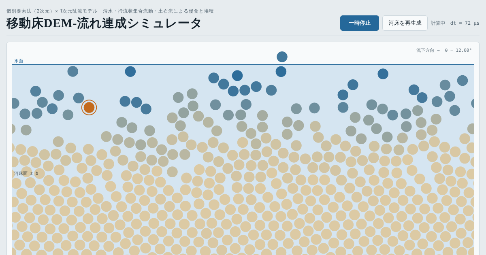
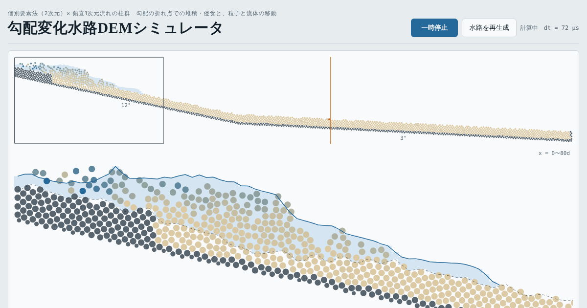

個別要素法（DEM）× 流れの連成 ブラウザで動く研究用シミュレータ
砂防DEMシミュレータ
粒子一つひとつの動きと、粒子に働く力を解いて、土石流・掃流状集合流動・清水による河床の侵食と堆積を調べられます。インストール不要で、スマホでも動きます。

移動床DEM-流れ連成シミュレータ
一様な斜面の河床で、勾配・水深・粒度を変えながら侵食と堆積を見られます。注目した粒子に働く抗力・揚力・接触力と応力、濃度の鉛直分布も出せます。
開く →
勾配変化水路DEMシミュレータ
急→緩、緩→急など、勾配が折れ曲がる水路に土砂と水を流し、折れ点での堆積の進み方や、粒子と流体の動きの違いを見られます。
開く →研究用の試作版です。2次元の円形粒子で計算しているため、実際の礫より摩擦が小さく（実効的な内部摩擦角は約26°）、堆積が始まる勾配などは実際とずれます。
計算はすべてお使いの端末の中で行い、データはどこにも送信しません。粒子が多い設定では動きが遅くなります。